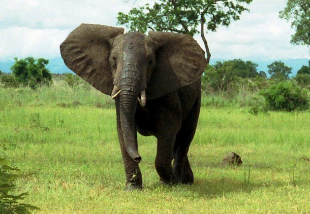
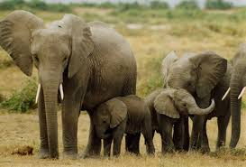
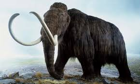

Voi
Tên: Voi Châu Phi
Tên khoa học: Loxodonta africana
Lớp: Động vật có vú
Chế độ ăn uống: Động vật ăn cỏ
Tuổi thọ trung bình: 70 tuổi
Kích thước: Chiều cao ở vai khoảng 2,5 – 4 mét
Trọng lượng: 2,5 – 7 tấn
Tình trạng trong Sách Đỏ: Sắp nguy cấp
Số lượng cá thể hiện tại: Đang tăng
Với chiều dài lên tới 7,3 m (24 feet) , gần 3,96 m (13 ft) chiều cao và nặng đến 11 tấn, voi đồng cỏ châu Phi là loài động vật trên cạn lớn nhất trên thế giới. Được tìm thấy chủ yếu ở các đồng cỏ xavan châu Phi, voi là loài động vật ăn cỏ và có thể tiêu thụ khoảng 160 kg (350 lb) thực vật mỗi ngày. Loài động vật này cũng có thời kỳ mang thai dài nhất so với tất cả các loài động vật có vú khác khi thời kỳ mang thai của chúng lên tới 22 tháng.
Thông tin thú vị về Voi có thể bạn chưa biết:
– Voi con sẽ bú mẹ trong vòng hai năm đầu đời
– Cấu trúc não của voi rất giống với con người
– Một con voi trong đàn chết, những con voi khác sẽ tới bên cạnh và tỏ lòng tiếc thương
– Tắm bùn thường xuyên giúp voi tránh được bệnh ngoài da và các loài bọ, ve